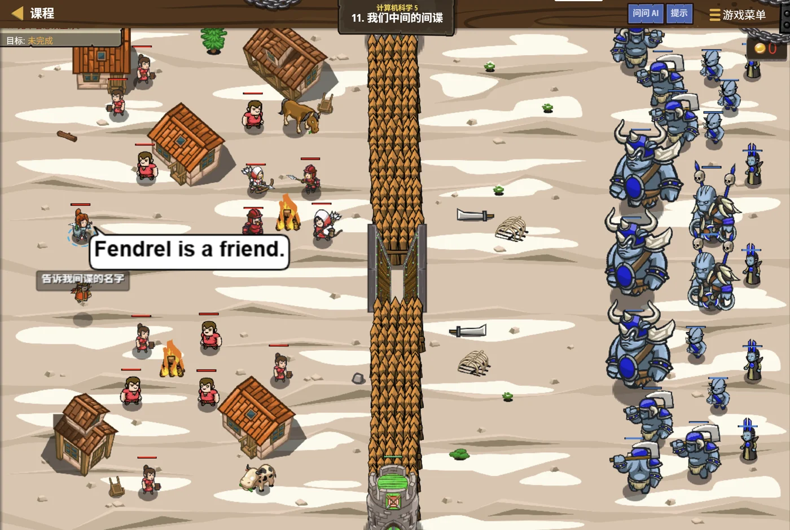

故事：高台的档案里混进了一份假报告，一旦当作真的读进去，整个统计就全错了。
斯凯勒把档案柜拍了一下：所以读之前先检查，读的时候要防着出岔子——
宁可当场报错停下，也不能带着错数据往下跑。
你明白了：这就是"异常处理"存在的意义。
宁可停下来，也不要一路错下去。
扣哒考级 · GESP C++ 四级 · 第 8 单元 | 齿轮高台 GEARWATCH TERRACE
档案库与安全阀 文件操作与异常处理
File I/O & Exceptions

斯凯勒
金发矿工 · 你的向导
车间最深处的档案库锁着一柜柜的资料。
斯凯勒拉开其中一格抽屉：你有没有想过——程序里算出来的那些数， 一关机就全没了？
你一愣：……确实。上次那个结果，我再想找就找不到了。
所以得写进档案里。她合上抽屉，又指了指墙角， 至于那只锅炉——它随时可能发脾气。所以我们还装了安全阀。
斯凯勒拉开其中一格抽屉：你有没有想过——程序里算出来的那些数， 一关机就全没了？
你一愣：……确实。上次那个结果，我再想找就找不到了。
所以得写进档案里。她合上抽屉，又指了指墙角， 至于那只锅炉——它随时可能发脾气。所以我们还装了安全阀。
斯凯勒 · 金发矿工
这是 C++ 四级的最后一课，也是整个四级的收尾。前面七课你学会了指针、数组、结构体、函数、递推、排序——都是在"程序里面"忙活。
这一课解决两个"边界问题"：数据怎么留下来，程序怎么摔不坏。
assets/illustrations/py-L4-08-01_archive_vault.webp
【配图位】石头砌成的档案大厅里满是贴着标签的抽屉柜，一格格排到天花板；一名金发矿工把一叠写好的报告放进其中一格抽屉，另一名矿工正从相邻的抽屉里取出一份读出；柜子侧面刻着"读"与"写"两个不同形状的符号，暖色油灯把抽屉的铜把手照亮。
0 单元导语与目标
Unit Overview
0.1 学习目标
1学完这个单元，你将能……
- 说清"内存"和"文件"的区别
- 用 C++ 打开并读取一个文件
- 把程序算出的结果写入文件
- 区分
"w"与"a"两种打开方式 - 说出"异常"是什么
- 用
try-catch让程序不在出状况时当场崩溃
2对标 GESP 考纲（C++ 四级）
- 理解文件的存储意义与基本概念
- 掌握文件的打开、读取、写入与关闭
- 理解异常的概念
- 掌握
try-catch的基本结构 - 考核目标：能读懂文件读写与异常处理的程序并判断结果
0.2 考纲对照
| 本单元小节 | 对应考纲条目 | 真题常考形式 |
|---|---|---|
| 1 数据为什么会丢 | 文件的作用 | 为什么程序里的数据一关机就没了 |
| 2 读文件 | 文件的读取 | ifstream 的用法；怎么按行读 |
| 3 写文件 | 文件的写入 | ofstream 的用法；"w" 与 "a" |
| 4 异常处理 | 异常的概念与捕获 | 类型不匹配时能不能捕获到 |
1 数据为什么会丢
Why Data Disappears
1.1 变量住在内存里
前面我们定义的所有变量、数组，全都住在内存里。
而内存有个特点：只要程序一结束（或者一断电），里面的东西就全没了。
两种"存东西"的地方
TEXT
【内存】（变量、数组住的地方）
优点：快
缺点：程序一结束就没了，断电更不用说
【硬盘上的文件】
优点：留得住，关机、断电都还在
缺点：读写比内存慢
所以：想长期留下来的数据，就得写进文件。结论 程序运行时的数据在内存里；要长期保存，就得"存档"到硬盘上的文件
1.2 一句话
打个比方：
程序里的变量就像写在沙滩上的字——只要程序一结束（涨潮），字就被冲掉了。
想让字留到明天，就得把它刻进石头——这就是把数据写进文件（硬盘）。
文件放在硬盘上，断电也不丢；变量放在内存里，程序一停就没了。
想让字留到明天，就得把它刻进石头——这就是把数据写进文件（硬盘）。
文件放在硬盘上，断电也不丢；变量放在内存里，程序一停就没了。
文件操作的四步：
① 打开（告诉程序要操作哪个文件）
② 读 / 写（真正干活）
③ 关闭（把缓冲区的内容真正写下去）
很多人只写前两步就跑了——结果最后一点数据没写进去。
② 读 / 写（真正干活）
③ 关闭（把缓冲区的内容真正写下去）
很多人只写前两步就跑了——结果最后一点数据没写进去。
2 读文件
Reading Files
2.1 打开与读取
用 ifstream 读文件
C++
#include <iostream>
#include <fstream> // ★ 文件操作要包这个头文件
using namespace std;
int main() {
ifstream fin("data.txt"); // ① 打开（ifstream = input file stream）
int a, b;
fin >> a >> b; // ② 读！用法和 cin 一模一样
cout << a + b << endl;
fin.close(); // ③ 关闭
return 0;
}关键发现
只是数据来源从"键盘"换成了"文件"
fin >> a 的用法和 cin >> a 完全一样——只是数据来源从"键盘"换成了"文件"
三个名字要记牢：
记忆窍门：字母
ifstream——input file stream，用来读。ofstream——output file stream，用来写。fstream——既能读也能写。记忆窍门：字母
i 是 in（进），o 是 out（出）。
2.2 逐行读取
一行一行地读，直到文件末尾
C++
#include <iostream>
#include <fstream>
#include <string>
using namespace std;
int main() {
ifstream fin("notes.txt");
string line;
while (getline(fin, line)) { // ★ 读到文件末尾就自动停下
cout << line << endl;
}
fin.close();
return 0;
}要点
把它放进
getline(fin, line) 一次读一整行（包含空格）；把它放进
while 的条件里，读到末尾会自动结束——这是读文本文件的标准写法
读文件前一定要确认"打开成功了没有"。
如果文件不存在（比如文件名打错了），
之后所有的读取都会失败，你却什么提示都看不到。
所以规范做法是先判断一下：
把
ifstream 不会报错，只是"打不开"。之后所有的读取都会失败，你却什么提示都看不到。
所以规范做法是先判断一下：
if (!fin) { cout << "文件打不开"; return 1; }把
ifstream 直接放进条件里，它会在"打开失败"时返回假。
图 2（SVG）：文件操作的四步
3 写文件
Writing Files
3.1 把结果写进去
用 ofstream 写文件
C++
#include <iostream>
#include <fstream>
using namespace std;
int main() {
ofstream fout("log.txt"); // ① 打开一个"输出文件流"
fout << "Welcome"; // ② 写！用法和 cout 一模一样
fout.close(); // ③ 关闭
// 跑完之后，当前目录下就多了一个 log.txt，
// 里面写着 Welcome
return 0;
}关键
只是输出的去向从"屏幕"换成了"文件"
fout << "..." 和 cout << "..." 用法完全一样——只是输出的去向从"屏幕"换成了"文件"
照应一下：cin/cout 和 fin/fout 是"同一套写法"
读：
写：
整行读：
掌握了这个对应关系，文件操作其实等于"已经会了一大半"。
cin >> a ↔ fin >> a写：
cout << a ↔ fout << a整行读：
getline(cin, line) ↔ getline(fin, line)掌握了这个对应关系，文件操作其实等于"已经会了一大半"。
3.2 "w" 与 "a" 的区别
打开方式不同，后果完全不同
C++
// 假设 log.txt 里原本写着 "旧内容"
ofstream f1("log.txt"); // 默认是 "w"（写模式）
// ★ 文件原有内容会被【清空】！
f1 << "新的";
ofstream f2("log.txt", ios::app); // "a"（追加模式）
// ★ 原有内容保留，新内容接在后面
f2 << "又一行";OUTPUT
用
用
"w"：文件里只剩 "新的"（旧内容被清空）；用
ios::app：文件里是 "旧内容又一行"（旧的还在）
最容易酿成"事故"的一点：默认打开就会清空文件。
默认的
如果你只是想"再添一行"，却忘了加
记忆：
ofstream f("x.txt"); 是"写模式"，
它会立刻把文件的原有内容全部清掉。如果你只是想"再添一行"，却忘了加
ios::app——
整个文件的历史记录就被你抹掉了，而且无法恢复。记忆：
"w" 是"重写"（清空重来），
ios::app 是"追加"（接着往后写）。
assets/illustrations/py-L4-08-03_read_write.webp
【配图位】石头档案大厅里的一排贴标签的抽屉，中间那只被拉开一半：左侧有一名矿工正从抽屉里取出一叠纸牌（读文件），右侧另一名矿工正把写好的一叠纸牌放进另一只抽屉（写文件）；两只抽屉上方各挂一块小木牌，分别写着"读"与"写"；温暖的石室灯光。
4 异常是什么
Exceptions
4.1 程序"摔了一跤"
程序在运行时遇到"没法继续"的情况，就会抛出异常（exception）。
几种常见的异常
TEXT
① 除数是 0
int a = 10, b = 0;
cout << a / b; // 出错
② 数组越界访问
int a[5];
a[100] = 1; // 踩到别人的地盘
③ 用 throw 主动抛出的异常
throw "出错了"; // 自己"喊一声"
④ 文件打不开、内存不够……共同点
这些情况一旦发生，程序往往会当场终止——后面的代码一行都不会执行
4.2 try-catch：接住它
把可能出错的代码"围起来"
C++
try {
// 可能出问题的代码
throw "出错了";
cout << "这一行不会执行"; // ★ throw 之后就不走了
}
catch (const char* e) {
// 接住异常，在这里处理
cout << "捕获到：" << e << endl;
}OUTPUT 捕获到：出错了
执行顺序
执行顺序
try 里的代码一旦 throw，立刻跳到对应的 catch，
try 里剩下的代码全部跳过
try-catch 的两个要点：
①
② catch 后面括号里的类型必须和 throw 的东西对得上。
而
throw 之后，try 里剩下的代码不再执行——
直接跳到 catch。② catch 后面括号里的类型必须和 throw 的东西对得上。
throw "Error"; 抛的是字符串字面量（类型是
const char*）；而
catch (int e) 想要接的是整数——
类型对不上，就接不住，程序会直接终止。
真题挖过的坑：类型不匹配就捕获不到。
题目里写：
问"程序会输出 Caught 吗"——答案是"不会"。
因为
没有匹配的 catch，程序就直接异常退出了。
要接住它，应该写
try { throw "Error"; } catch (int e) { cout << "Caught"; }问"程序会输出 Caught 吗"——答案是"不会"。
因为
"Error" 是字符串字面量，
类型是 const char*，不是 int。没有匹配的 catch，程序就直接异常退出了。
要接住它，应该写
catch (const char* e)。
assets/illustrations/py-L4-08-02_safety_valve.webp
【配图位】工坊里一只压力飙升的锅炉，锅身发红、蒸汽外冒；锅炉侧面一只发光的青铜安全阀自动弹开，把喷出的气流导进一条侧管、火花被挡板拦住；一名金发矿工站在安全阀前镇定地转动手柄，脸上没有慌张；锅炉旁一块小铭牌上刻着两个对称的箭头符号（表示"抛出—接住"）。
5 代码实战
Level Practice
关卡
我们中间的间谍
进入关卡 →思路：把"读文件 + 处理数据"包进 try，
一旦发现数据不对就 throw，
由 catch 统一收尾。

assets/stages/py-L4-08-stage1_spy_among_us.webp
【截图位】我们中间的间谍关卡：高台上多个单位混在一起，代码编辑区可见文件读写与 try-catch 结构。
读文件 + 校验 + 异常处理
C++
#include <iostream>
#include <fstream>
using namespace std;
int main() {
ifstream fin("scores.txt");
if (!fin) { // ★ 先确认能打开
cout << "文件打不开" << endl;
return 1;
}
try {
int n;
fin >> n;
if (n <= 0) { // ★ 数据不合法
throw "数据不合法"; // 主动抛出
}
int sum = 0, x;
for (int i = 0; i < n; i++) {
fin >> x;
sum += x;
}
cout << sum << endl;
}
catch (const char* e) { // ★ 注意类型要匹配
cout << "出错了：" << e << endl;
}
fin.close();
return 0;
}如果文件里第一行是 3，后面三个数 → 输出它们的和
如果第一行是 0 或负数 → 输出 出错了：数据不合法
如果文件不存在 → 输出 文件打不开，程序正常结束
如果第一行是 0 或负数 → 输出 出错了：数据不合法
如果文件不存在 → 输出 文件打不开，程序正常结束
和本单元的关系：
这段程序把本单元的两件事合在了一起：文件操作 + 异常处理。
三层防护，各管一件事：
①
②
③
这就是"健壮的程序"和"能跑的程序"之间的差别。
去扣哒世界闯这一关 →
三层防护，各管一件事：
①
if (!fin)——管"文件能不能打开"（这类错误不该用异常，直接提示就行）；②
throw——管"数据本身合不合法"（发现了就主动报错）；③
catch——管"统一收尾"（把错误信息告诉用户，程序优雅退出而不是崩溃）。这就是"健壮的程序"和"能跑的程序"之间的差别。
6 常见陷阱
Common Pitfalls

扣哒鸭 · 调试官
文件与异常这块，四条坑。第二条最"要命"。
1
忘了包
<fstream> 头文件。
扣哒鸭：
只包
ifstream、ofstream 都住在
<fstream> 里。只包
<iostream> 是不够的，编译器会说不认识这两个名字。正确做法：文件操作前先
#include <fstream>2
默认打开
ofstream，把原文件清空了。
扣哒鸭：
想接着往后写，必须写
这个错误一旦发生，数据就找不回来了。
ofstream f("a.txt"); 默认是"写模式"，
一打开就把原有内容全部清掉了！想接着往后写，必须写
ofstream f("a.txt", ios::app);。这个错误一旦发生，数据就找不回来了。
记牢：默认"清空重写"；要追加就加
ios::app3
catch 的类型和 throw 的对不上。

扣哒鸭：
用
throw "Error"; 抛出的是字符串字面量，
类型是 const char*。用
catch (int e) 是接不住的——类型不匹配，
程序会直接异常退出，什么都不会输出。正确写法：
catch (const char* e)4
忘了
close()，最后一点数据没写进去。
扣哒鸭：写文件时，数据先待在缓冲区里，
程序正常结束时系统会帮你关；可要是中途异常退出了，缓冲区里的东西就丢了。
养成习惯：用完就
close() 才会真正把它落到硬盘上。程序正常结束时系统会帮你关；可要是中途异常退出了，缓冲区里的东西就丢了。
养成习惯：用完就
close()。好习惯：打开的文件，用完立刻关闭
7 题目练习
Practice
前 2 题改编自 C++ 四级真题，其余为原创练习题。
改编自 2026 年 9 月 · C++ 四级 · 判断题 第 9 题判断题
假设文件能够正常打开，下面程序会把
Welcome
写入 log.txt。（ ）int main() {
ofstream fout("log.txt");
fout << "Welcome";
fout.close();
return 0;
}
查看答案与详解
答案：正确（√）。逐句看：
①
②
③
一点补充：题目假设"文件能够正常打开"， 所以不用担心
对应小节3.1 把结果写进去。
①
ofstream fout("log.txt"); —— 打开（或新建）
当前目录下的 log.txt 用于输出。②
fout << "Welcome"; —— 写入。
fout 的用法和 cout 完全一样，
只是输出方向从屏幕变成了文件。③
fout.close(); —— 关闭，把缓冲区里的内容真正写到硬盘上。一点补充：题目假设"文件能够正常打开"， 所以不用担心
fout 打开失败的情况；
另外这个文件此时是空的（或原本有内容、被清空了），
所以最后文件里就是 Welcome。对应小节3.1 把结果写进去。
改编自 2026 年 9 月 · C++ 四级 · 判断题 第 10 题判断题
执行下面程序时，
catch (int e) 能够捕获由
throw "Error"; 抛出的异常，因此程序输出 Caught。（ ）int main() {
try {
throw "Error";
}
catch (int e) {
cout << "Caught";
}
return 0;
}
查看答案与详解
答案：错误（×）。程序不会输出 Caught。
原因是类型不匹配：
而
没有匹配的 catch 会怎样？程序会直接异常终止—— 屏幕上什么都不输出（可能只有一句系统报错）。
正确写法：
顺带记一条：
对应小节4.2 try-catch：接住它。
原因是类型不匹配：
throw "Error"; 抛出的是一个字符串字面量，
它的类型是 const char*（指向字符常量的指针）——
不是 int。而
catch (int e) 只想接整数，
类型对不上，就接不住。没有匹配的 catch 会怎样？程序会直接异常终止—— 屏幕上什么都不输出（可能只有一句系统报错）。
正确写法：
catch (const char* e) { cout << "Caught"; }顺带记一条：
throw 5; 抛的是 int，
throw "abc"; 抛的是 const char*，
throw 'x'; 抛的是 char——
catch 的类型必须和它们对得上（或者能"接得住"）。对应小节4.2 try-catch：接住它。
原创练习题单选题
执行下面的代码，输出是（ ）。
try {
cout << "A";
throw 1;
cout << "B";
}
catch (int e) {
cout << "C";
}
cout << "D";
A.
ABCD B.ACD C.AB D.AC查看答案与详解
答案：B。按执行顺序一步步看：
①
②
③ 所以
④
⑤ catch 结束后程序继续往下走，输出 D。
合起来是 ACD，选 B。
A 项是以为 throw 之后还会继续执行； D 项是漏了 catch 之后的代码会继续执行这一步。
关键理解：throw 的作用是"立刻中断当前流程"，而不是"记一笔然后往下走"。
对应小节4.2 try-catch：接住它。
①
cout << "A"; —— 正常执行，输出 A；②
throw 1; —— 抛出异常，
控制权立刻跳出去，try 里后面的代码全部跳过；③ 所以
cout << "B"; 永远执行不到；④
catch (int e) 接住（类型是 int，对得上），输出 C；⑤ catch 结束后程序继续往下走，输出 D。
合起来是 ACD，选 B。
A 项是以为 throw 之后还会继续执行； D 项是漏了 catch 之后的代码会继续执行这一步。
关键理解：throw 的作用是"立刻中断当前流程"，而不是"记一笔然后往下走"。
对应小节4.2 try-catch：接住它。
原创练习题判断题
用
ofstream f("a.txt"); 打开一个已经存在、里面有内容的文件，
并在里面写入新内容，那么文件原来的内容会和新内容一起保留下来。（ ）查看答案与详解
答案：错误（×）。
所以最后文件里只剩新写的内容，旧内容已经没了，无法恢复。
想保留旧内容、把新内容接在后面，必须显式指定追加模式：
记忆："w" = 重写（清空重来）；"a" = 追加（接着往后写）。
这也是实际开发中很容易酿成事故的一个点—— 想追加日志却忘了加
对应小节3.2 "w" 与 "a" 的区别。
ofstream 默认的打开方式是"写模式"，
它会在打开的那一刻把文件原有内容全部清空。所以最后文件里只剩新写的内容，旧内容已经没了，无法恢复。
想保留旧内容、把新内容接在后面，必须显式指定追加模式：
ofstream f("a.txt", ios::app);记忆："w" = 重写（清空重来）；"a" = 追加（接着往后写）。
这也是实际开发中很容易酿成事故的一个点—— 想追加日志却忘了加
ios::app，历史日志就被整份抹掉了。对应小节3.2 "w" 与 "a" 的区别。
原创练习题编程题
题目要求：从文件
若文件打不开，输出
in.txt 中读入 n 和 n 个整数，
求出它们的最大值、最小值和总和，
把这三个结果写入文件 out.txt（用空格隔开，占一行）。若文件打不开，输出
文件打不开 并正常结束。查看参考答案与要点
#include <iostream>
#include <fstream>
using namespace std;
int main() {
ifstream fin("in.txt");
if (!fin) { // ★ 先检查能不能打开
cout << "文件打不开" << endl;
return 1;
}
int n;
fin >> n;
int mx, mn, sum = 0;
for (int i = 0; i < n; i++) {
int x;
fin >> x;
if (i == 0) { mx = mn = x; } // ★ 第一个数当初值
else {
if (x > mx) mx = x;
if (x < mn) mn = x;
}
sum += x;
}
fin.close(); // ★ 读完就关
ofstream fout("out.txt"); // 默认写模式，正好用来"新建结果文件"
fout << mx << " " << mn << " " << sum << endl;
fout.close(); // ★ 写完也要关
return 0;
}
输入文件 5 / 12 7 25 3 18
输出文件 25 3 65
要点：
① 文件操作的"打开 → 读写 → 关闭"三件套，读和写各来一遍；
② if (!fin) 必须写——
文件不存在时 ifstream 不会报错，只是打不开；
③ 求最值时第一个数当初值（用 i == 0 判断），
这样能正确处理"全是负数"的情况；
④ 关掉输入流再开输出流，顺序清楚、不容易出岔子；
⑤ ofstream 默认就是"写模式"，
这里正好是我们需要的（结果文件每次重写）；
⑥ 别忘了 #include <fstream>。
对应小节2.1 打开与读取；3.1 把结果写进去。
8 本单元小结
Unit Summary
斯凯勒 · 金发矿工
四句话记住这一课：一、变量在内存里，程序一停就没了；想留住就得写进文件。
二、读用
ifstream fin，写用 ofstream fout；用法和 cin/cout 一模一样。三、
ofstream 默认会清空文件；想追加必须加 ios::app。四、
throw 之后 try 里的代码不再执行；catch 的类型必须和 throw 的对得上。C++ 四级就到这里了。你从"会写代码"走到了"会管理内存、会组织数据、会设计算法"—— 再往上，就是真正的竞赛世界了。
你在档案库与安全阀前收获了什么
- 内存 vs 文件——内存快但一停就没；文件在硬盘上，断电也留得住。
- 头文件——文件操作要
#include <fstream>。 - 读文件——
ifstream fin("data.txt");， 之后fin >> x的用法和cin >> x一样。 - 写文件——
ofstream fout("log.txt");，fout << "…"的用法和cout << "…"一样。 - 逐行读——
while (getline(fin, line))， 读到文件末尾会自动停下。 - 检查是否打开成功——
if (!fin) { … }；打开失败不会报错，只会静默失败。 - 务必 close()——close 才会把缓冲区的内容真正落盘。
- 写模式 vs 追加模式——默认
ofstream会清空原文件； 要追加必须写ios::app。 - 异常——程序遇到"没法继续"的情况时抛出；不处理就会当场终止。
- try-catch——
try里放可能出错的代码，catch里处理；throw之后 try 里剩下的代码不再执行。 - catch 的类型必须匹配——
throw "Error";抛的是const char*，用catch (int e)接不住。 - 健壮性——宁可当场报错停下，也不要带着错数据一路往下跑。
C++ 四级，通关
齿轮高台的八个单元走完了——指针、二维数组、结构体、函数、作用域、递推、排序、文件与异常。
到这里，你已经能写出结构清晰、数据组织得当、还经得起出错的程序了。
再往上，是星砂绿洲——那里等着你的，是数论、搜索、动态规划这些真正的算法世界。